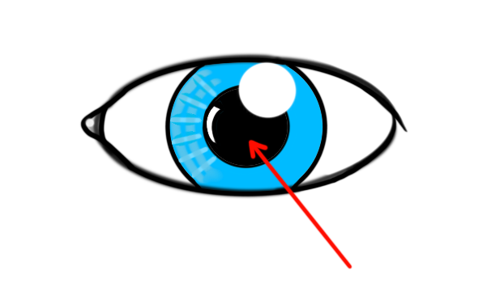
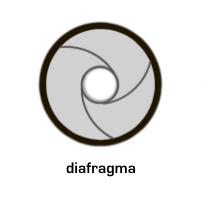
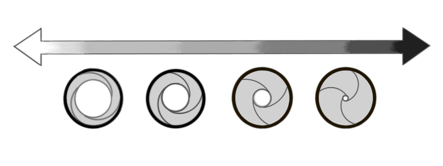
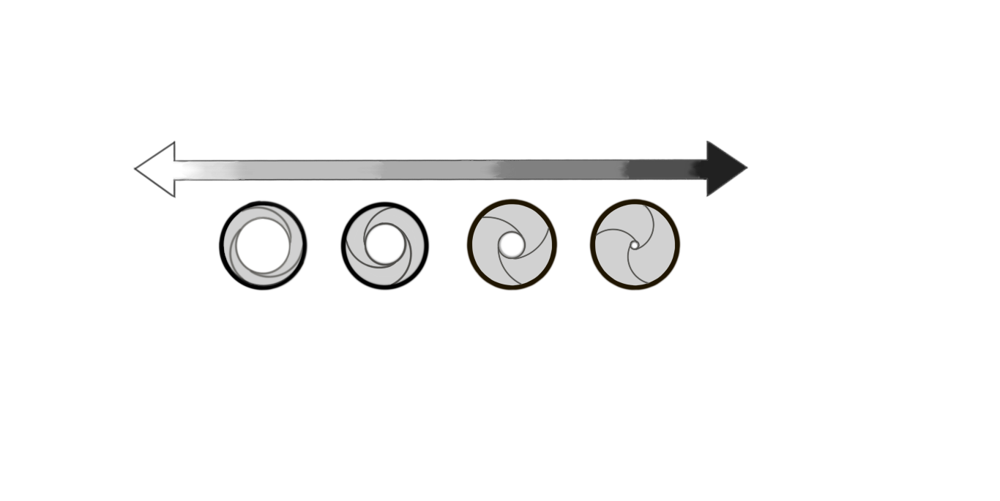

Antes de entrarmos em termos técnicos de fotografia, vou usar o olho humano para fazer uma comparação que vai facilitar a compreensão dos conceitos.
O olho
Vou usar o olho como modelo porque ele tem estruturas com funções bem parecidas com estruturas da câmera. Aqui vou focar em uma estrutura: a pupila.
A pupila é aquela bolinha preta que fica bem no meio do olho: 
Em um ambiente bem iluminado, raios de luz vindo de todas as direções chegam nos nossos olhos. Assim, para um mesmo ponto, um olho receberia raios vindos de direções diferentes, ou seja, do reflexo de mais de um objeto. Isso tornaria tudo muito confuso.
A pupila funciona como um filtro para esses raios. Na verdade a pupila é um buraquinho, e é por ele que os raios de luz entram no olho. Como ela é muito pequena, só alguns raios conseguem passar, o que torna a imagem mais nítida.
Podemos concluir que a pupila controla a quantidade de luz que entra no olho. Porém, a quantidade de luz varia de ambiente para ambiente (e ao longo das horas do dia). A pupila contorna esse problema mudando de tamanho. Quando está escuro, ela dilata (aumenta), permitindo que mais raios entrem no olho. Quando está claro ela diminui, gerando o efeito contrário.
O diafragma
Câmeras fotográficas também tem uma "pupila". Ela recebe o nome de diafragma e fica atrás da objetiva (lente).
Assim como a pupila, o diafragma pode aumentar ou diminuir, dependendo da luminosidade do local. A medida do quanto o diafragma está aberto ou fechado recebe o nome de abertura. Com uma grande abertura, a câmera recebe mais luz, e a foto fica mais clara. Com uma abertura menor, a câmera recebe menos luz, e a foto fica mais escura.
Devo ressaltar que mudanças na abertura não mudam só a claridade da foto. Da mesma forma que a pupila "filtra" os raios de luz que chegam no olho gerando nitidez, a pupila filtra os raios que estão no sensor. Quanto menor o buraquinho (ou a abertura) do diafragma, mais nítida - ou seja - mais focada fica a imagem. Para falar a verdade, a abertura não afeta o foco da imagem como um todo, mas muda a profundidade de campo. Para entender melhor veja a aula de profundidade de campo.
Na câmera
Agora que você já sabe o que é a abertura, vamos ver como aplicar esses conceitos na sua câmera. Uma das possibilidades para controlar a abertura é deixando a câmera no modo manual (geralmente indicado por M na câmera). O manual te dá controle total sobre as possibilidades de sua câmera, mas em contrapartida não existe mais ajuste automático para a claridade da foto. Assim, se você aumenta a abertura a foto vai ficando mais clara, porque a câmera não compensa a claridade alterando outro ajuste (como a velocidade do obturador ou o ISO).

Se você quer controlar apenas a abertura de sua foto, existe uma opção mais prática: o modo prioridade de abertura (geralmente indicado por A ou Av na câmera). Nesse modo, a câmera vai adotar a abertura que você desejar, mas vai compensar a mudança na claridade alterando outro ajuste (normalmente a velocidade do obturador).
Medindo a abertura
Ao comprar uma lente ou ver as especificações da sua câmera compacta você já deve ter se deparado com algo parecido com F2.8 ou f/3.5-5.6. O número que aparece perto do "F" (conhecido como número F) é uma medida da abertura ou do intervalo de aberturas possíveis da lente.
Você deve estar se perguntando: por quê F? A resposta é simples. O valor da abertura mede quantos raios passam pelo buraquinho do diafragma. Esse valor é obtido pela razão entre a distância focal (f) e o diâmetro do buraquinho (D):
Abertura=f/D
Como a distância focal varia com o zoom, não atribuímos um valor para ela. Assim, para um diâmetro de 2mm, abertura=f/2. Podemos concluir que quanto maior o número f, mais fechado está o diafragma e mais escura é a imagem.

Aprofundando um pouco
Se você experimentar alterar a abertura da sua lente, vai ver que o número F varia em valores estranhos (ex: f/5.6). Isso acontece porque a abertura costuma variar em intervalos, conhecidos como f-stops. A cada f-stop, a área abertura aumenta em dobro. Porém, multiplicar a área por dois significa multiplicar o diâmetro por √2 (aproximadamente 1,4):
| Area | x | 2x | 3x | 4x |
|---|---|---|---|---|
| F | 1.4 | 2.8 | 4.2 | 5.6 |
Muitas vezes as câmeras não seguem essa escala (sempre o dobro da área), o que pode acarretar em valores que não seguem o padrão da tabela.
Aprofundando um pouco
Se você experimentar alterar a abertura da sua lente, vai ver que o número F varia em valores estranhos (ex: f/5.6). Isso acontece porque a abertura costuma variar em intervalos, conhecidos como f-stops. A cada f-stop, a área abertura aumenta em dobro. Porém, multiplicar a área por dois significa multiplicar o diâmetro por √2 (aproximadamente 1,4):
| Area | x | 2x | 3x | 4x |
|---|---|---|---|---|
| F | 1.4 | 2.8 | 4.2 | 5.6 |
Muitas vezes as câmeras não seguem essa escala (sempre o dobro da área), o que pode acarretar em valores que não seguem o padrão da tabela.